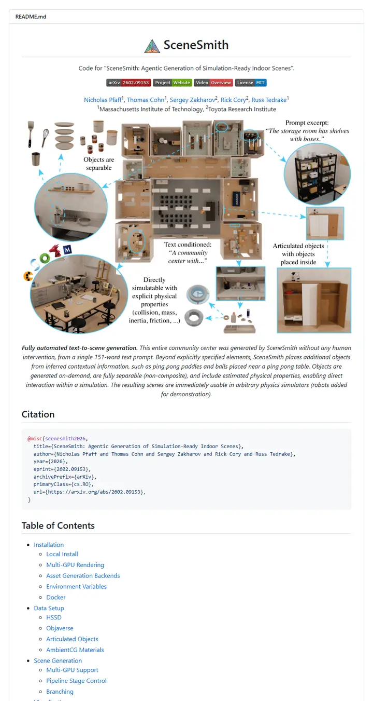

nepfaff/scenesmith
運用マニュアルの冒頭に留められた建築家の断面図。長いイタリックのキャプションを添えた大きな注釈つき平面図が一枚、その後に正確な指示を記したシェルブロックが五十余り。

表示されたページと照合済みです。
選んだ理由
長いイタリックのキャプションを添えた大きな注釈つきヒーロー図が説明をすべて担い、早めに置かれた引用と入れ子の目次が、運用中心の長い README に合っています。
以下の説明と DESIGN.md 本文は英語です。コーディングエージェントが同じ一つの版を読めるよう、翻訳していません。
概要
ヘッダー部分
バッジの色
セクション構成
ガイドライン
似たスタイル

adobe-research/obj-and-mat-selection
目次まで備えた会議録のページ。中央の一行に太字の名前、小さな ACM SIGGRAPH の紋章、細いタグが六つ。そしてスイカや台所の写真のグリッドでは、モデルが選んだ部分がティール色に染まっている。

Chuan-10/AGILE
明るい光の下の実験台。五文字の名前、太い大文字タグの帯。そしてハサミやマグカップ、コントローラーを握る手を並べたコンタクトシート。

coral-lab-asu/CRAFT
学会のリボンを掛けたツールマニュアル。中央に一行のタイトル、絵文字付きバッジの長い帯、点線で区切ったリンクバー。そして最初のインストール行より前に、三行の表が手法全体を説明してしまう。

damon-demon/SpanUQ
学会のスタンプが押されたコマンドラインツールのマニュアル。角括弧つきの見出し、小さな色付きタブが四つ、点線のジャンプバー、そして最初の段落が終わる前に数字が出てくる。

deepmancer/HairPort
プレスキットのように組まれた論文。大文字の派手なタグが一列に並び、日付入りの告知、学術誌のページのようにキャプションを持つ番号付きの図。そのすべてを太いグレーの罫線が区切る。

donaldssh/K-Merge
白い壁に貼られた学会のタイトルスライド。中央に一つの見出し、控えめなクレジットのブロック、グレーとカラーのタグの短い帯。そして文章が一語も出てくる前に、パステルのブロック図が物語を語る。